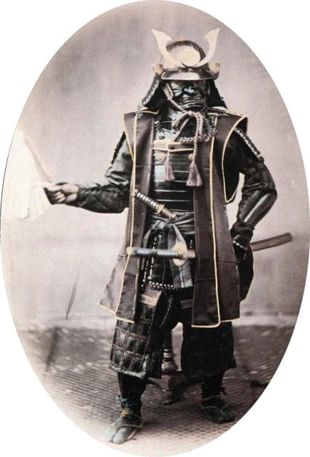
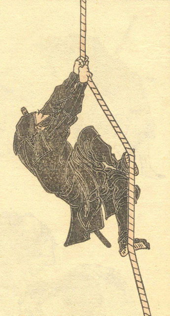
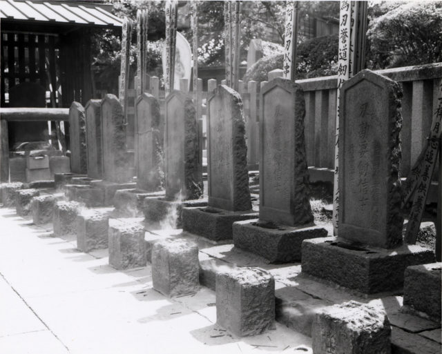
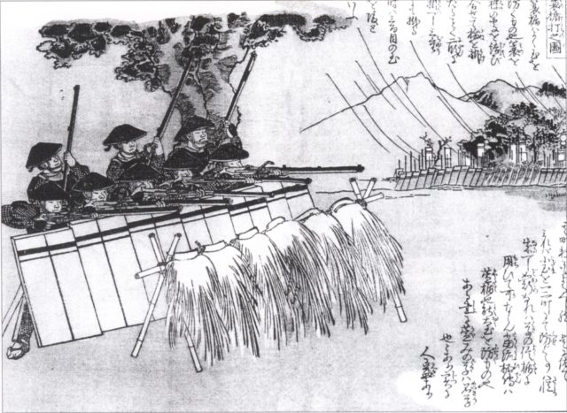

Samurai

Ninja

Ronin

Ashigaru
Way of Samurai
Sakura is the Japanese word for the revered cherry blossom tree. This sacred tree has a special symbolic meaning to the Samurai & Bushido. Bu-shi-do or Military-Knight- Way is the moral and ethical code the famed Japanese Samurai lived their life by.The Sakura tree may be seen as an important symbolic metaphor for life and the seasons. Throughout Spring, Summer and Autumn the Sakura tree grows with little noticeable change above ground. Indeed for 49 weeks of the year its energy is purposefully channelled into its roots, forcing these deeper and thus ensuring a stronger, more resilient tree. Throughout winter the Sakura weathers the often unforgiving elements.
Samurai
Ninja
Ronin
Ashigaru
“Fighting isn't all there is to the Art of War. The men who think that way, and are satisfied to have food to eat and a place to sleep, are mere vagabonds. A serious student is much more concerned with training his mind and disciplining his spirit than with developing martial skills.”
Sign up for the latest information right now!